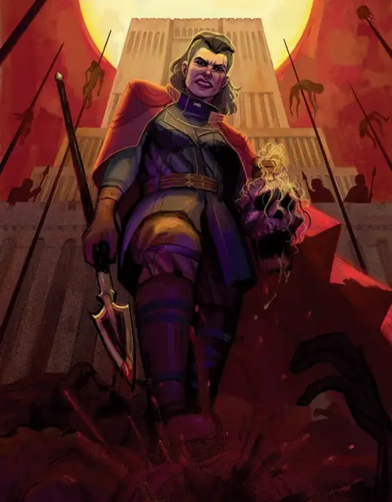

Владеска Дракова
Vladeska Drakov
Средний Гуманоид, Принципиальный Злой, именной НИП

Класс Защиты 18 Инициатива +5 (15)
Хиты 170 (20к8 + 80)
Скорость 30 футов
| мод | спас | ||
|---|---|---|---|
| СИЛ | 19 | +4 | +4 |
| ЛОВ | 15 | +2 | +2 |
| ТЕЛ | 18 | +4 | +8 |
| мод | спас | ||
|---|---|---|---|
| ИНТ | 14 | +2 | +2 |
| МДР | 13 | +1 | +1 |
| ХАР | 16 | +3 | +7 |
Иммунитеты Испуганный
Чувства пассивное Восприятие 15
Языки Общий, Великаний, Орочий
Опасность 12 (8 400 опыта или 10 000 опыта в Домене; БВ +4)
Особенности
Восстановление Тёмной владычицы. Спустя 1к10 недель после смерти Владеска возрождается с полными Хитами где-то в Фальковнии.
Легендарное сопротивление (3/день, или 4/день в Домене). Если Владеска проваливает спасбросок, она вместо этого может в нём преуспеть.
Действия
Мультиатака. Владеска совершает две атаки Пикой. Она может заменить одну из этих атак атакой Пронзающим копьём.
Пика. Бросок рукопашной атаки: +8, досягаемость 10 фт. Попадание: 15 (2к10 + 4) Колющего урона.
Пронзающее копьё. Бросок рукопашной или дальнобойной атаки: +8, досягаемость 5 фт. или дальность 20/60 фт. Попадание: 13 (2к8 + 4) Колющего урона, и цель пронзена копьём Владески. Пронзённое существо Опутано и получает 3 (1к6) Колющего урона в начале каждого своего хода. Цель или существо в пределах 5 футов от неё действием может извлечь копьё, оканчивая этот эффект.
Артиллерия, залп! (1/день). Спасбросок Ловкости: Сл 15, все существа в Цилиндре радиусом 20 футов и высотой 60 футов с центром в точке, видимой Владеской в пределах 300 футов. Провал: 13 (3к8) Дробящего урона плюс 13 (3к8) урона Огнём, и цель Опрокидывается. Успех: Только половина урона.
Реакции
Перенаправление атаки. Условие: Существо, которое видит Владеска, совершает по ней бросок атаки. Эффект: Владеска выбирает союзника Среднего или Маленького размера в пределах 5 футов от себя. Затем Владеска и этот союзник меняются местами, и союзник становится целью атаки.
Легендарные действия
У этого существа есть 3 использования Легендарных действий (или 4 использования в Домене); оно может немедленно после окончания хода другого существа потратить одно использование, чтобы совершить одно из следующих действий. Существо восполняет все потраченные использования в начале каждого своего хода.
Натиск. Владеска перемещается на расстояние вплоть до половины своей Скорости и совершает одну атаку Пикой.
Жуткое протыкание. Владеска совершает одну атаку Пронзающим копьём. Если бросок атаки попадает и цель — существо, все союзники цели в пределах 30 футов от неё подвергаются следующему эффекту. Спасбросок Мудрости: Сл 15. Провал: Цель Испугана до конца своего следующего хода. Провал или успех: Владеска не может совершить это действие снова до начала своего следующего хода.
Выстрел баллисты. Спасбросок Ловкости: Сл 15, одно видимое Владеской существо в пределах 120 футов. Провал: 17 (4к6 + 3) Колющего урона, и Скорость цели снижена на 10 футов до конца её следующего хода.
Бонус мастерства +4
Владеска Дракова
Тёмная владычица — немезида нежити
Владеска Дракова, генеральша деморализованной оккупационной армии, правит остатками Фальковнии — тем немногим, что ещё не захлестнули орды мертвецов. Смекалистая автократка, она убеждена, что для достижения победы хороши любые средства, сколь бы безнравственны они ни были. Туманы терзают её, раз за разом подводя к самой грани поражения. Дракова измотана до предела и вынуждена наблюдать, как её точные расчёты рассыпаются перед бесконечной чередой чрезвычайных происшествий и неодолимой вражеской ордой — шаг за шагом она всё ближе к краю. Голод, нехватка сна и бесконечные требования перепуганных солдат и гражданских доводят её до вспышек паранойи и жестокости.
История Владески
В мире, где Владеска Дракова родилась, её знали как Багровую Соколицу — предводительницу непревзойдённой наёмной армии под названием «Соколиные когти». В стране ожесточённо враждующих королевских семей она и её солдаты исполняли тысячелетние обиды и мелкие зверства. Владеска сколотила состояние и планировала рано уйти на покой, купить титул и земли, чтобы править.
Разорение Йейвера изменило эти планы. Грабя город, наёмники Драковой зашли слишком далеко. В кровавой резне Соколиные когти убили кого-то единственного в своём роде. Никто не знает кого — наследного принца, святого, ведьму, ангела? — но с этой смертью весь мир обратился против них.
Правящие дома объединились, чтобы истребить Когтей. Благодаря тактическому гению Дракова отразила атаку преследователей и перешла в контрнаступление. Одного за другим она атаковала бывших покровителей: сжигала деревни, сгоняла жителей на службу и сажала на кол любого, в ком текла хоть капля благородной крови. Годами труда Владеска ковала кровавую империю. Но во время штурма пылающего города своего последнего врага Дракову и её солдат поглотил дым. Когда он рассеялся, всё, что они знали, исчезло.
Перенесённая в незнакомые земли, Дракова со своей армией без промедления подчинила их. Этот неготовый край пал быстро, почти без сопротивления. Взяв город Лекар, Владеска провозгласила себя правительницей новой империи — Фальковнии.
Однако под безлунным небом против Драковой восстали мертвецы: ногти трупов заскребли по стенам Лекара прежде, чем люди успели поднять тревогу. Блистательные и отчаянные стратегии Владески в конце концов отбросили зомби во время многодневной Первой осады Лекара, но победа была добыта ценой гибели почти всех её ветеранских отрядов.
С тех пор Дракова почти утратила свою страну. Каждый месяц разворачивается новая отчаянная битва. Она без устали готовится к каждой, уверенная в окончательной победе, но не перестаёт сомневаться в стойкости своих солдат. Угрозами и публичными казнями на колу она заставляет народ бояться себя больше, чем нежити. И с каждым новолунием она встречает непобедимого врага, никому не раскрывая тайну, что ведома ей одной: у каждого зомби — лицо невинного, которого когда-то её солдаты предали мечу.
Домен Владески
Фальковния, домен Владески, изменяется из-за её присутствия, что создаёт следующие эффекты:
• Закрытие границ. Владеска не может по желанию закрывать или открывать границы домена. Границы Фальковнии обычно закрыты, но раз в месяц, в ночь новолуния, они открываются на одну неделю.
• Авторитарный режим. Союзники Владески совершают с Преимуществом спасброски Мудрости.
• Бесконечная война. Всякий раз, когда существо (кроме Владески и её союзников) завершает Долгий отдых в домене, бросьте к20. При выпадении «1» существо не снижает уровни Истощения как результат этого отдыха и получает 1 уровень Истощения.
Если Владеска умирает, все эти эффекты мгновенно исчезают. Они возникают снова, если Владеска возрождается (см. Восстановление Тёмной владычицы).